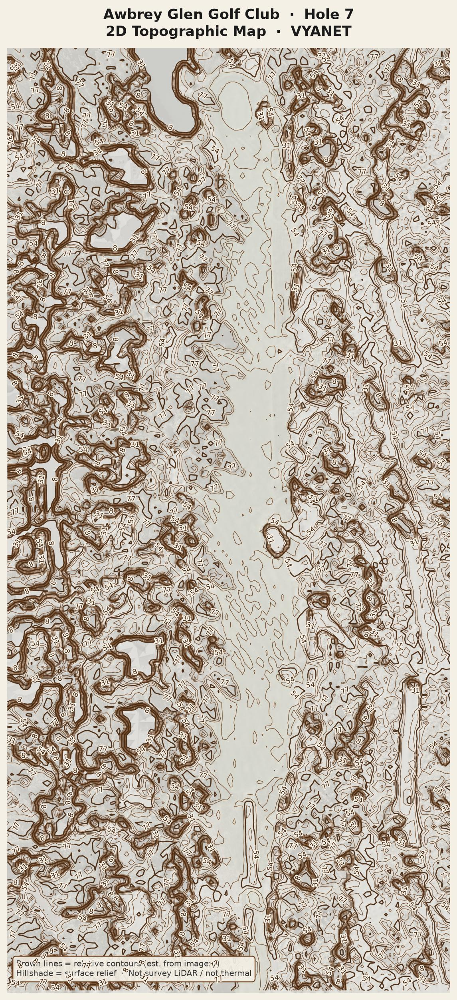
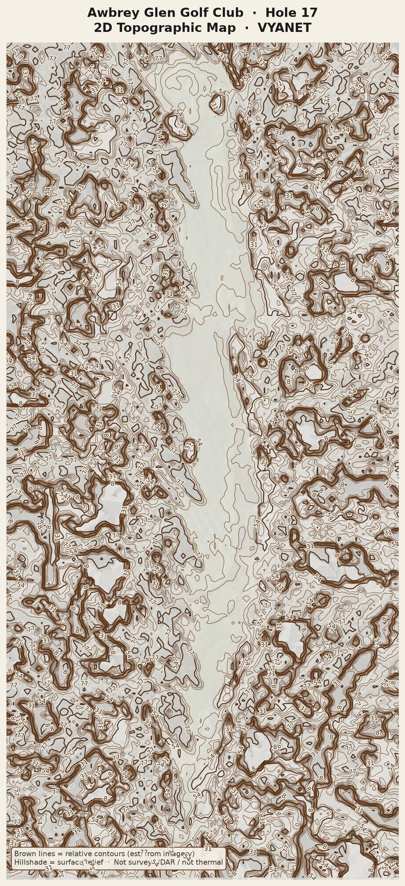

AWBREY GLEN · 2D TOPO
VYANET · classic hillshade + contours
2D topographic maps
from your drone photos. Brown contours + hillshade — not thermal, not LiDAR.

Hole 7 — 2D Topographic Map
Par 4 · downhill · hillshade + contours

Hole 17 — 2D Topographic Map
Par 4 · uphill · hillshade + contours
Back to all holes